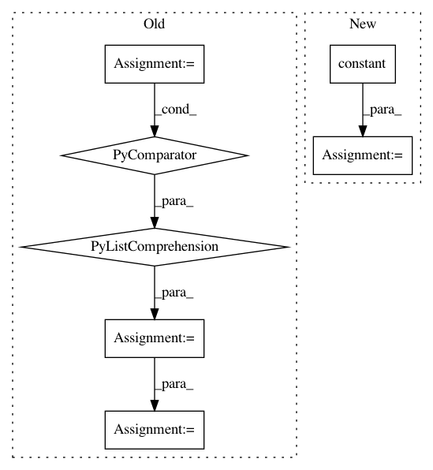

62cea7fcfcc9e20b784e08bddce5dc69b9578ef4,tensorforce/core/memories/replay.py,Replay,tf_retrieve_episodes,#Replay#Any#,94
Before Change
limits = limits + tf.where(condition=(limits < starts), x=capacity, y=zero)
// Randomly sampled episode indices ranges
indices = [tf.range(start=starts[i], limit=limits[i]) for i in range(n)]
indices = tf.concat(values=indices, axis=0)
indices = tf.mod(x=indices, y=capacity)
// Retrieve episode indices
episodes = self.retrieve_indices(indices=indices)
After Change
limits = limits + one
// Correct limit indices if smaller than start indices
zero = tf.fill(dims=(n,), value=tf.constant(value=0, dtype=util.tf_dtype(dtype="long")))
capacity = tf.fill(
dims=(n,), value=tf.constant(value=self.capacity, dtype=util.tf_dtype(dtype="long"))
)
limits = limits + tf.where(condition=(limits < starts), x=capacity, y=zero)
In pattern: SUPERPATTERN
Frequency: 3
Non-data size: 7
Instances
Project Name: reinforceio/tensorforce
Commit Name: 62cea7fcfcc9e20b784e08bddce5dc69b9578ef4
Time: 2019-01-05
Author: alexkuhnle@t-online.de
File Name: tensorforce/core/memories/replay.py
Class Name: Replay
Method Name: tf_retrieve_episodes
Project Name: onnx/onnx-tensorflow
Commit Name: 054095d922edda5134e520522bc82a1b95cc5bd4
Time: 2020-09-09
Author: smonov@gmail.com
File Name: onnx_tf/backend_rep.py
Class Name: TensorflowRep
Method Name: run
Project Name: tensorflow/models
Commit Name: 7a69f962bbe0fc6ed26d6fd2306d02fbfed69afd
Time: 2019-12-17
Author: cjfj@google.com
File Name: official/transformer/v2/translate.py
Class Name:
Method Name: translate_file